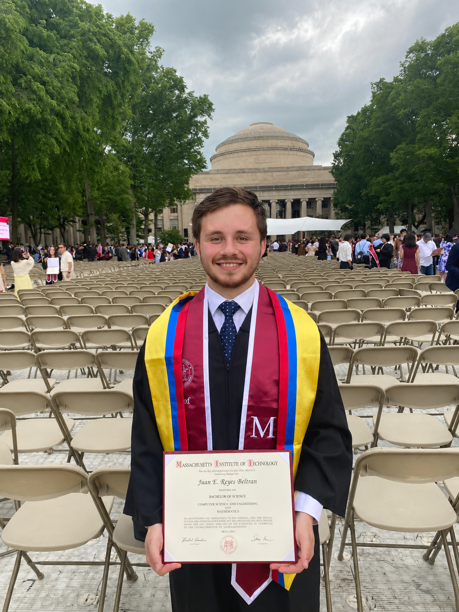

Juan Esteban Reyes Beltrán
I’m a computer scientist and mathematician interested in cryptography, information theory, computer security, and software development. I’m drawn to work where technical depth meets real responsibility: systems that people depend on, decisions that shape risk, and tools that can make safer choices easier.
I was born and raised in the vicinity of Bogotá, Colombia, and moved to the United States in 2021 to complete my bachelor's degrees in Mathematics and in Computer Science and Engineering at MIT. I am currently finishing my Master of Engineering degree, also at MIT.
My work is guided by the belief that technology should be evaluated not only by how it feels to users, but by how it affects them. To me, security is one of the clearest expressions of that responsibility. It means building systems that protect people at scale, reduce risk before it becomes harm, and help engineers design with safety in mind from the start.
My background spans security-focused software engineering, academic research in cryptography, and extensive teaching experience. Together, these have trained me to think carefully about risk, communicate complex ideas clearly, and build systems with people in mind.